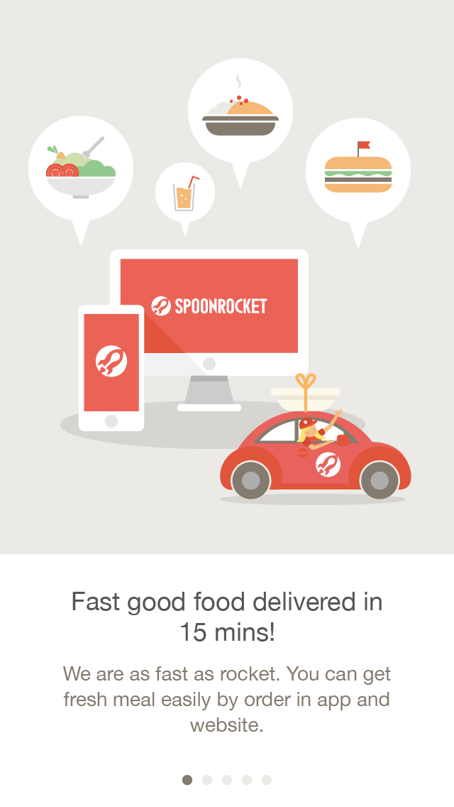
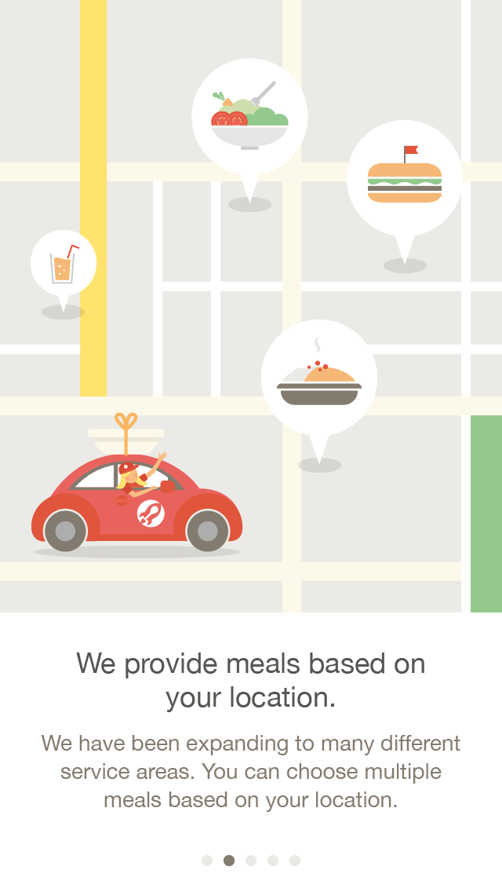

Mobile growth hacking ideas
An onboarding design that briefly describe what service SpoonRocket provides and main concept of how-to-use-it to make the users easily get into the app's usage.
Overview: SpoonRocket is a food delivery company servicing in SF. People can order meals via the app or website to get the them in fast speed. In order to let first time users recognize what services SpoonRocket provides and to use the app effortlessly, we're going to create a series of landing pages that show our brand and how it works.
Bring up ideas for improving our apps to increase conversion rate in any perspective.
When users can quickly get in the situation of what to do and how to do it in the app, they will be willing to use SpoonRocket's service.
Accordingly, in order to let first time users recognize what services SpoonRocket provides and to use the app effortlessly, we're going to create a series of intro screens that show our brand and how it works.
The first page should tell users what services we provide, If they're interested then they'll continue to explore. Also we shouldn't tell too detailed about UI usage it would make it too much efforts to read. In the mean time, we can apply some animation and illustration style to add more fun and ease the anxiety during the whole process.

One of the important information that has to let users know is to "wait at the curb when the food is about to arrive".
We persist in "fast delivery", so the delivery driver will never leave the car during delivering meals. You have to go outside at the curb to take the meal from the driver, which is very different from most of delivery companies.
These cabins and gardens in Susu were all built by Cheng himself, with collected driftwoods and other recycling materials. There're two cabins, a picnic pavilion, a bathroom, a shower room and a iris garden. Cheng's original house is just near by them.
Shows Spoonrocket logo when opening the app.

To briefly introduce our services and let users know they can order meals via either mobile app or website.

The meals will fly to this page and become markers on the map, which says we have varies menus for different areas.
One of the meals will fly to this page and become an item on smartphone, just tap + and checkout, which is that easy.
The meal will fly drivers hand. Users haev to wait for driver on the curb in 15 mins to take the meal.
After tutorial, it shows landing page with spoonrocket logo and "locate me", "log in" button.
These cabins and gardens in Susu were all built by Cheng himself, with collected driftwoods and other recycling materials. There're two cabins, a picnic pavilion, a bathroom, a shower room and a iris garden. Cheng's original house is just near by them.